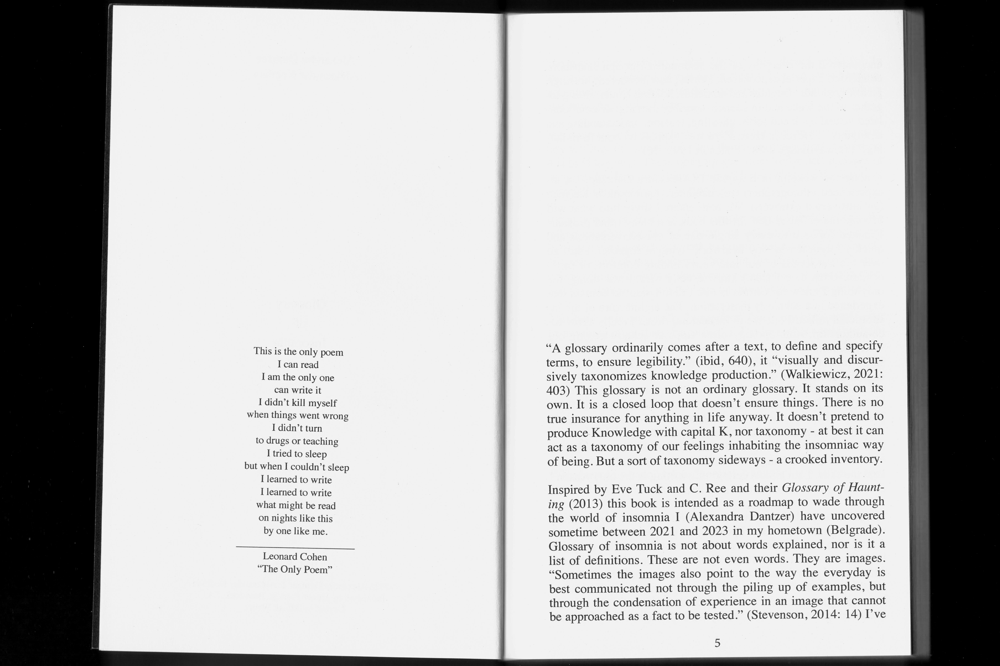
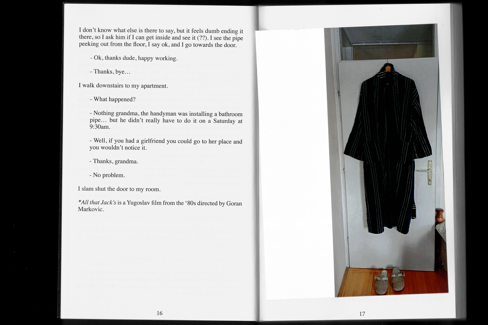
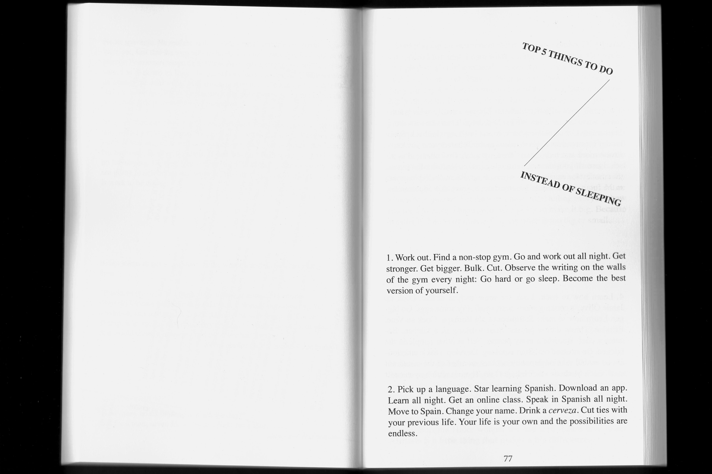
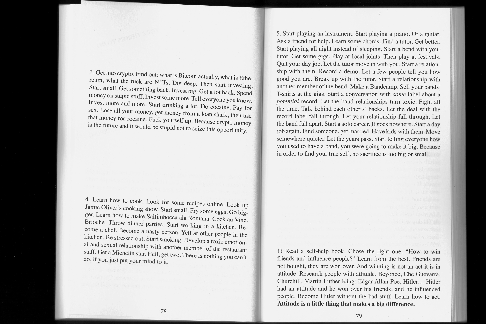
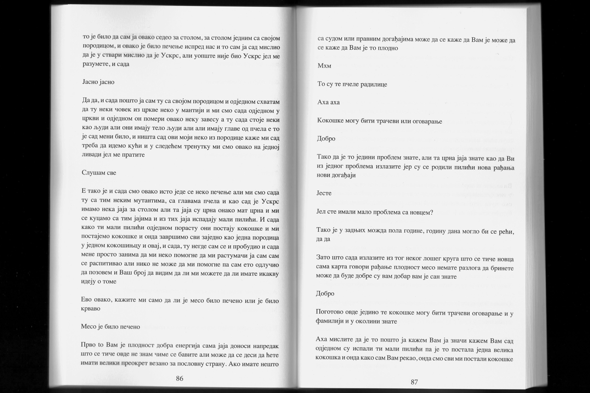
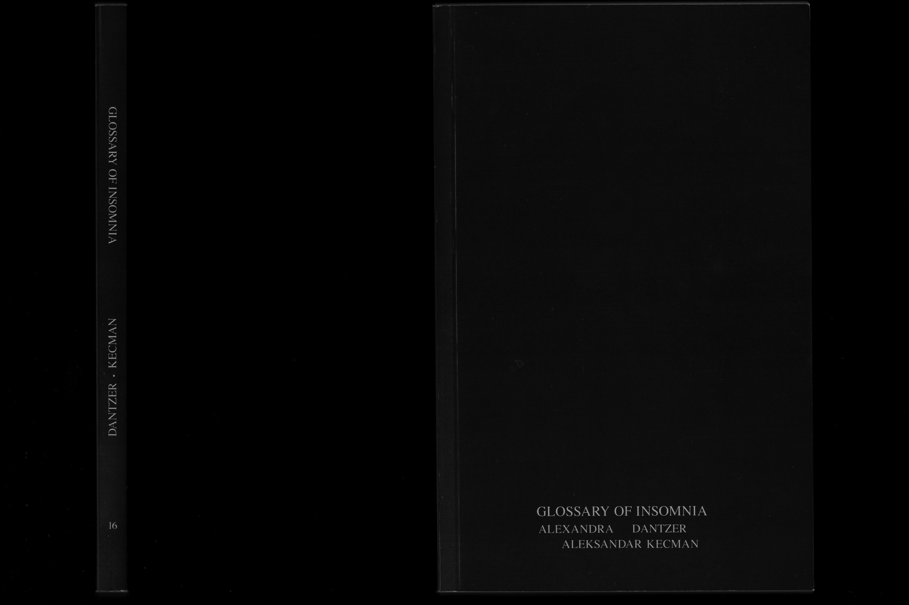

Alexandra Dantzer & Aleksandar Kecman, Glossary of Insomnia
182 pages / b﹠w, laser print, perfect bound / 4.5x7 / ed. of 50.
$20 + $3.99s/h. (buy)
*we no longer offer shipping outside of the United States.
A glossary conventionally comes after a text to define terms and ensure legibility—but this one stands alone. Refusing to produce Knowledge with a capital K, it offers instead a crooked inventory of images and feelings from the insomniac world uncovered in Belgrade, Serbia, between 2021 and 2023. Born from a collaboration that resisted the confines of academic authorship, these pages blur transcription and fiction, embrace linguistic imperfection, and withhold the certainty of who wrote what.
"This book is dedicated and aimed at all insomniacs, all the restless, wakeful and alert. In order for us (all of us) to sleep we are reliant on the vigilantly awake guarding our night. When we sleep, we let go of ourselves and relinquish our reins to the wakefulness of others. Insomniacs, you are the guardians. You do so much, you are so much." (from the introduction)







